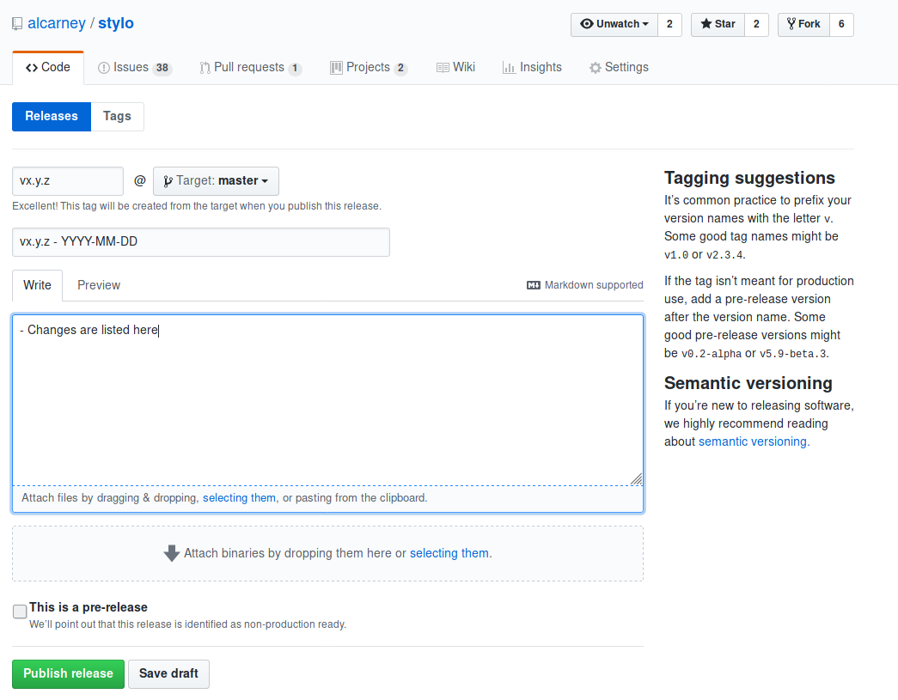

The Release Process¶
This page outlines the release process, what has to be done before a release, how a release is triggered and how a release actually works. While it’s not essential for every contributor to know the inner workings of a release it is certainly useful to know as it provides context for some of the decisions made in our processes such as The Branching Policy
There are currently 2 distinct release processes in stylo:
- Documentation Release: This builds, tests and deploys the documentation to GitHub Pages
- Package Release: This builds, tests and deploys
styloitself to PyPi
Documentation Release¶
A documentation release is triggered everytime a commit is made on the
develop branch of the main repository. Travis will run all the
tests as normal, then as long as the docs-build task completes
successfully it will proceed to publish the new version of the documentation.
For full details on the documentation build process please see this article
Below is the current Travis deployment configuration:
- provider: pages
skip-cleanup: true
github-token: $GH_TOKEN
local-dir: "docs/_build/html/"
verbose: true
on:
branch: develop
condition: $TOXENV = docs-build
python: 3.6
Attention
The box above is extracted from the current .travis.yml file. If what
you read here doesn’t match what is shown above, it’s most likely that this
documentation is out of date and an issue should be raised.
provider: pages: We tell Travis that we are deploying a website to GitHub Pagesskip-cleanup: true: By default Travis will delete any files generated during the build - we obviously don’t want that so we skip that step.github-token: The keys to GitHublocal-dir: Which directory contains the siteverbose: Tell Travis to print more about what it is doing.on: Only do the release when the following conditions are met.branch: The build is running on the develop branchcondition: $TOXENV = docs-build: It only makes sense to publish when we have built the documentation.python: Only on the given version of python.
It’s also worth mentioning that the way Travis deploys the website is by force
pushing the generated HTML to the gh-pages branch on the main
repository. I assume that’s a good thing since it is the default.
Note
Currently the documentation is unversioned, whenever an update is available
it is published. This probably doesn’t matter too much right now as the
documentation is still very much under development. However this does mean
that the documentation may pull ahead of the version of stylo that is
generally available which would lead to confusion. This should be changed
sometime in the future.
Package Release¶
A package release is triggered whenever a commit it made on the master
branch of the main repository. Travis will run all the tests as normal
and if the py36 task completes successfully then it will package and
publish stylo to PyPi.
However unlike the documentation release which is quite informal, there are a number of things that need to be done before and after a package release
Drafting a Release¶
A draft release is made by opening a PR from the develop branch onto the
master branch of the main repository. In order for this PR to become a
proper release the following must be satisfied
- All the code, docs, tests etc that are to be included in the release have been
merged onto the
developbranch. - The
stylo/_version.pyhas been updated to the latest version number. - The
CHANGES.rstfile has been updated to include a summary of the changes included in the release. On the day of the merge the release title is updated to include the date and version of the release - All the tests pass and Travis is happy.
If all is well and whoever is looking after the release is happy, then the PR can be merged which will kick off the release process.
The Release¶
The process from when the PR is merged to the moment the latest stylo
package turns up on PyPi is entirely automated. Travis will rerun all the tests
after the merge and then proceed to package and publish the new version.
Todo
Link to the article explaining the code related build processes, when it is available.
Below is the current Travis configuration
- provider: pypi
distributions: "sdist bdist_wheel"
user: alcarney
password:
secure: "F27QSW59xfuwTIrJMUFNB5Mi1ELQArRvawldBt8YNZH9HxPWdThEUSnXZMs3vzHYV1NwiQV1h/3XalsCbB59fJogcN9NeNdGvM2Ff0phMURlCUytn3pJvuoMDCY4Dnwyy3GZ8XX/zhmZvIYBn1awiL7/JDe6j5iVyeyeKIRbX1DRHEjbKj4XhkHb2NFsbzs8F8fkBARGcldli611LAfuD1+6UQANyzEmyfg4wAbIctRgfQ1F4swp4jCAb5TjkUDEt2/9S2ai49kI7BY5nZ68D50dFNecuVvcXYRazEvGvxvt0OuZAqeUzr7aUTOlmGLp1vTP/QyXRYQDbnnSyvIr3fii104atM30QtBf/C1MlSgH68IOzMg4ULmnBSSFny4ICMIhzosuCVZWtxnghep0LENsk8f0USGsnLja+kOcgB8kGm/PQW4m3IRJpyR9GvzBeRMKoyF4B9o2IEq1nrl/K+EyoA+jtqxzd/gIxLEVrmSWSj37StX8WC1npoGIEDcVQLppf81++TEXR4tznPS3T52gGMrxY5cPYgAg0KItArEeoe0Mfx20kkVU+XkcWsgCP9ccoXu0erYYgvquoBYzyNrAz0JGxCQYC3iCVmUbt87yJRGWUfYPoWiVBJ3haHvi+M4HmpUDOpC/6J8OIAevnEMe22fJGcQTbZtX7JwM0H4="
on:
condition: $TOXENV = py36
python: 3.6
Attention
The box above is extracted from the current .travis.yml file. If what
you read here doesn’t match what is shown above, it’s most likely that this
documentation is out of date and an issue should be raised.
provider: pypi: Tell Travis that we are publishing a package to PyPidistributions: We want to publish both the source and a compiled wheeluser,password: PyPi credentials.on: Only do the release if the following conditions are met.condition: py36: We only need to publish the package once, so we’re currently using the Python 3.6 build.python: 3.6: Possibly a redundant condition? But since it works it doesn’t seem worth the risk to take it out.- The build is on the master branch (an implicit default).
The package and its contents are defined by the setup.py file at the
root of the repository.
Todo
Link to the article explaining the setup file when it’s written.
After the Release¶
{kind=link}
After the PR has been merged there is one last manual step to be done and that is to create a release on GitHub.
After clicking on the Draft a new release button on the releases page
you are taken to a page as shown above where the following fields need to be
filled in.
- The version string needs to be put in the tag name box
- The branch needs to be changed to master
- The title of the release needs to be copied over from the
CHANGES.rstfile - The changes for the release need to be copied over from the
CHANGES.rstand pasted into the body. Note: You will need to convert the text from rst to markdown
Once it has been filled out click the green Publish release button and
you are done!
Note
It is the hope that this step can also be automated, by having something like a webhook trigger on the merge to master we can use the GitHub API to automatically create the release notice.